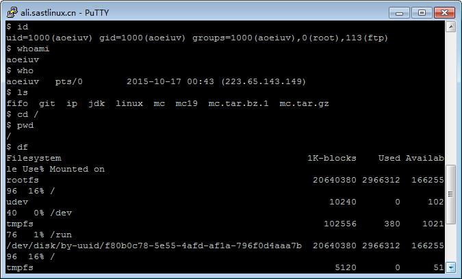
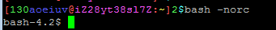
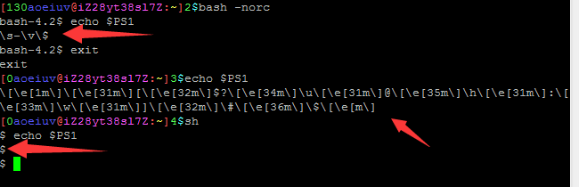
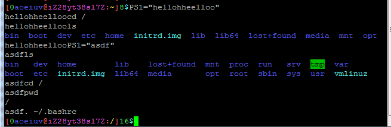
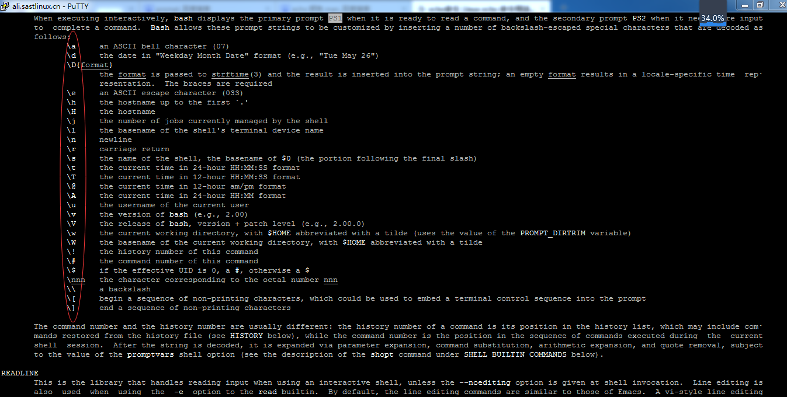

PS1，回到对Linux最初的印象。

其实就是一个黑框，往里面输入一个一个命令，做什么事都是一个个命令，每个命令前面通常有个$或#，为什么是黑白的呢，因为最初的sh(Shell)是不支持颜色的，当然，第一节课同学看到的是这样花花绿绿的。

除了命令的输出可以带颜色以外，命令前面那个“[0aoeiuv@iZ28yt38sl7Z:~]”也可以带颜色的，这里讲的就是前面那一串东西，首先，那个花花绿绿的是我自己设置的，先看看默认的，通过“bash -norc”可以看到bash默认的情况，其实也很简陋。

不管怎样，那个字符串都是存在一个名叫“PS1”的变量里的，通过“echo $PS1”可以看见这个变量的内容。

直接改PS1这个变量就可以看到前面显示的字符串立马就变了。

除了直接显示，PS1还有各种高级用法，可以在bash的手册里找到说明，man bash，然后搜索PS1，输入“/PS1”，然后按n表示下一个，直到下图的位置。

要能简单看懂英文，看不懂的可以直接试试，因为太多，这里只介绍几个，\u表示用户名，\h表示主机名，\w表示路径，至于颜色，说起来就比较复杂了，有兴趣可以看看或者直接模仿我的PS1，简单的说，换颜色也是通过输出字符实现的，是一个转义字符\e加几个普通字符，然后自己随便改改PS1看看输出的是什么，最好可以把输出保存起来，做个纪念。